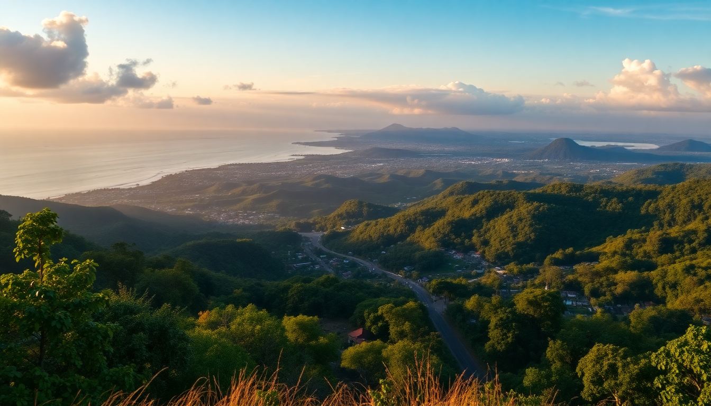

14-Day Costa Rica Itinerary: San José to Manuel Antonio

I landed in San José with a vague plan and a single carry-on. Two weeks later, I’d looped from the capital up to Arenal’s volcano, across the misty cloud forests of Monteverde, and down to the Pacific coast at Manuel Antonio. Here’s exactly how I did it—what worked, what didn’t, and where I’d spend my money again.
Is 14 days enough for San José, Arenal, Monteverde, and Manuel Antonio?
Yes—but you need to move on a schedule. Four locations in two weeks means three travel days and a solid 3–4 nights per stop. I spent my first night in San José to shake off jet lag, then rented a car from Alamo at SJO for the loop. If you’d rather not drive, shared shuttles like Interbus run between all four spots, but you lose flexibility.
- San José: 1 night (arrival day only)
- Arenal/La Fortuna: 4 nights
- Monteverde: 3 nights
- Manuel Antonio: 4 nights
- San José: 1 night (departure)
What should I do in San José without wasting time?
Skip the city if you’re short on time—I almost did. But I’m glad I spent one evening in Barrio Escalante, the foodie neighborhood. Dinner at Sikwa (indigenous-inspired cuisine) was my best meal in Costa Rica. For a quick cultural hit, walk through Museo Nacional inside the old Bellavista Fortress—it’s closed Mondays.
- Eat: Sikwa (Barrio Escalante, book ahead)
- Walk: Mercado Central for cheap souvenirs and a fresh fruit smoothie
- Stay: Hotel Grano de Oro—old-world charm, quiet, and a 10-minute Uber from the airport bus terminal
- Avoid: The Plaza de la Cultura area after dark—it’s sketchy, not dangerous, but not worth your time
How do I get from San José to Arenal, and where should I stay?
Drive or take a shared shuttle. The route via Route 1 and Route 126 takes about 3 hours. I drove, and the last 30 minutes through rolling farmland toward Volcán Arenal was stunning. Base yourself in La Fortuna town, not at the lake—more restaurants and tour operators.
- Stay: Arenal Observatory Lodge if you want volcano views from your bed; Hotel Lomas del Volcán for mid-range comfort with hot springs access
- Eat: Soda La Hormiga for cheap casados (set lunches); Don Rufino for a nicer dinner
- Tours: Book a night walk at Arenal Observatory Lodge—we saw a sleeping toucan and a tarantula. The Mistico Hanging Bridges are worth it for the canopy views, but go early (7 a.m. opening) to avoid crowds
Is Monteverde worth the bumpy drive from Arenal?
Yes, but the road is terrible. From La Fortuna to Monteverde, you take the Lake Arenal route (about 3.5 hours). The last 10 miles are unpaved gravel—I averaged 15 mph. Rent a 4x4 or you’ll regret it. Once you arrive, the cloud forest is unlike anything else: damp, cool, and buzzing with life.
- Stay: Hotel Belmar—eco-friendly, great restaurant, and the best cloud-forest views from the balcony
- Eat: Tree House Restaurant for pizza (it’s actually built around a tree); Café Monteverde for coffee and pastries
- Tours: Curi-Cancha Reserve is less crowded than the main Monteverde Cloud Forest Reserve and we saw more wildlife—howler monkeys, quetzals, and a coatimundi. Book a guided birding tour at dawn
- Skip: The Bat Jungle—it’s a small room with bats. Not worth $12
What’s the best way to see Manuel Antonio without the crowds?
Manuel Antonio National Park is small and popular. Arrive at 6:45 a.m. when gates open, or book a guided morning tour through the park office. I went with Iguana Tours—our guide spotted a three-toed sloth and a Jesus Christ lizard within the first 15 minutes. The park closes at 4 p.m., so afternoon arrivals get rushed.
- Stay: Hotel Si Como No—has a wildlife refuge on-site and a pool overlooking the Pacific. Book the rainforest-facing rooms
- Eat: El Avión—a restaurant built inside a decommissioned cargo plane. The ceviche is solid, the sunset view is better
- Beach: Playa Espadilla Sur inside the park is the best swim; Playa Biesanz outside the park is quieter but has rougher waves
- Avoid: The main road in Quepos at night—it’s loud and tourist-trap central. Eat in Manuel Antonio village instead
How do I get back to San José from Manuel Antonio?
Drive or take a shuttle. The Costanera Sur Highway (Route 34) is paved and takes about 3 hours to SJO airport. I left at 7 a.m. and hit minimal traffic. If you’re flying out, budget an extra hour for the San José–Caldera toll road construction delays.
- Option 1: Drive yourself—drop the car at Alamo SJO
- Option 2: Book Interbus shared shuttle ($55 per person, door-to-door)
- Option 3: Fly Sansa Airlines from Quepos Airport to SJO—30 minutes, $100, and incredible coastal views
FAQ
Do I need a rental car for this itinerary? Not strictly, but it gives you flexibility. The drive from La Fortuna to Monteverde is rough without 4x4. If you’re uncomfortable with unpaved mountain roads, book shared shuttles between cities—Interbus and Desafío Adventure Company both run reliable routes. In Manuel Antonio, you don’t need a car; taxis and shuttles cover the park and beaches.
What should I pack for Costa Rica’s different climates? Layers. San José is mild (70°F), Arenal is hot and humid (85°F), Monteverde is cool and rainy (60°F at night), and Manuel Antonio is tropical (90°F and humid). I lived in quick-dry hiking pants, a rain jacket, and sandals with straps. Bring a fleece for Monteverde evenings—I didn’t and was cold.
Is it safe to drive between these destinations? Yes, with two caveats: don’t drive after dark (roads lack lighting, and animals wander), and watch for potholes on secondary roads. The main highways (Route 1, Route 27, Route 34) are well-maintained. I used Waze—it’s more accurate than Google Maps for Costa Rica.
Conclusion
- Start slow: One night in San José to adjust, then head straight to Arenal for the best volcano views and hot springs.
- Book tours locally: Walk-up prices at park gates are often lower than online. I saved $15 on the Mistico Hanging Bridges by buying at the counter.
- Pack for mud: Monteverde is wet. Waterproof shoes and a poncho are non-negotiable.
- Eat sodas: Small local restaurants (sodas) serve the best casados for $5–$8. Skip tourist menus.
- Leave buffer time: Flights and shuttles run late. I missed my original departure because a shuttle from Manuel Antonio arrived 90 minutes late.